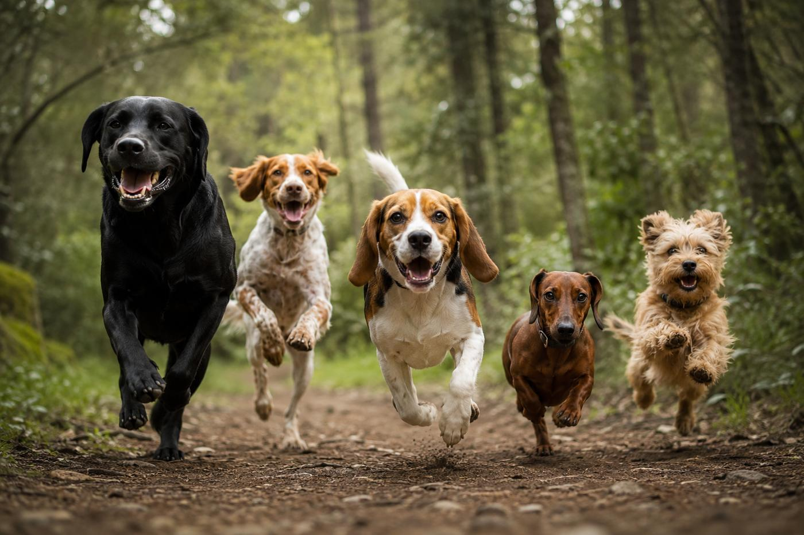
Des balades en groupe encadrées par une pro.
Je viens chercher votre chien et le ramène chez vous.
Des groupes fixes de 4 à 7 chiens qui se retrouvent toutes les semaines pour aller courir, renifler, creuser et jouer ensemble dans les forêts autour de Strasbourg.
Je viens chercher votre chien directement chez vous et je le ramène après la balade. Vous n'avez rien à organiser.
De vrais sentiers forestiers où les chiens peuvent courir, explorer, renifler et profiter de la nature.
Ils apprennent à se connaître et évoluent ensemble.
Renifler, explorer, prendre des décisions, évoluer dans un environnement riche… Une balade en forêt sollicite autant son cerveau que son corps.
Au fil du temps, les liens se créent. Les chiens jouent ensemble, prennent leurs habitudes et attendent leur balade avec impatience.
Courir, renifler, grimper, se rouler dans les feuilles, creuser… La forêt lui permet d'exprimer des comportements naturels qu'il ne peut pas toujours vivre en ville.
Quand ses besoins physiques, mentaux et sociaux sont satisfaits, un chien est généralement plus détendu, plus serein et plus équilibré au quotidien.
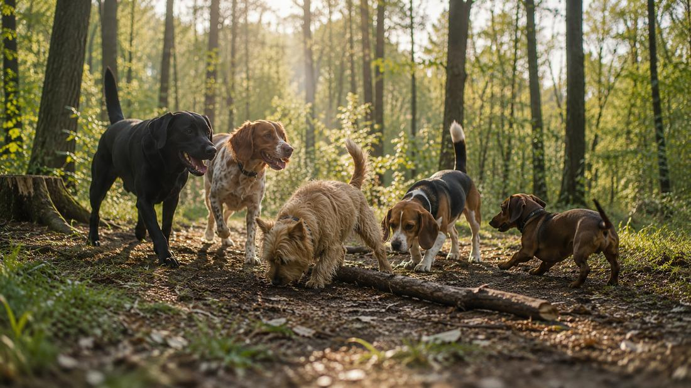
Vous aimeriez que votre chien profite, lui aussi, de son petit rituel hebdomadaire en forêt ?
Entre le travail, les trajets et le quotidien, il n'est pas toujours facile d'offrir une grande balade à son chien.
Vous savez qu'il aimerait courir, renifler, explorer... mais vous n'avez pas toujours le temps de l'emmener en forêt.
Un nouveau rythme de travail, un bébé, un souci de santé ou simplement moins de temps qu'avant… Vous souhaitez continuer à offrir de belles balades à votre chien.
Chaque chien est différent. Avant d'intégrer définitivement un groupe, nous prenons le temps de faire connaissance lors de plusieurs balades. Cela permet de vérifier que le groupe lui convient… et qu'il convient au groupe.
En cas de doute, on en parle lors de la visite de pré-balade. Rien n'est figé.
💬 L'objectif n'est pas de remplir un groupe. L'objectif est que chaque chien s'y sente bien. C'est pourquoi l'intégration se fait progressivement, au fil de plusieurs balades.
Et si on en parlait ?
Remplissez le formulaire en 2 minutes.
Je reviendrai personnellement vers vous pour voir si le Forêt Club correspond à votre chien... et répondre à toutes vos questions.
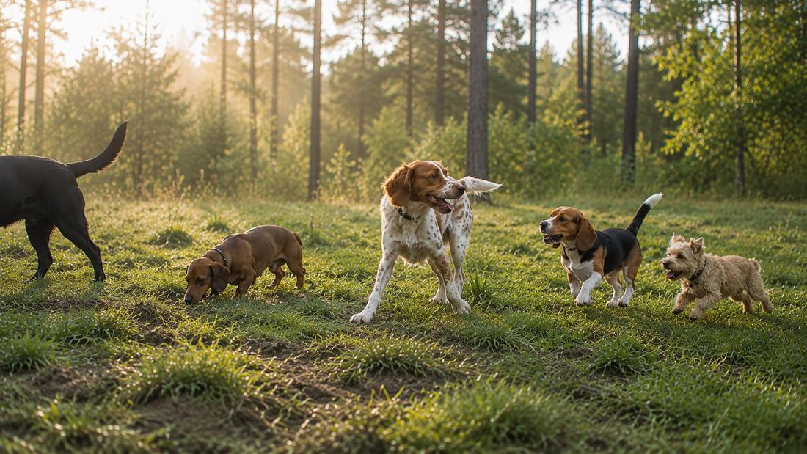
Derrière le Forêt Club, il y a deux passions : les chiens et la forêt.
Je m'appelle Oriane.
Les chiens font partie de ma vie depuis toujours.
Pendant plus de quinze ans, j'ai partagé mon quotidien avec Ropin et Missak, adoptés à la SPA de Strasbourg. Avec eux, j'ai exploré des centaines de kilomètres de sentiers, jusqu'à traverser la Grande Traversée du Jura puis marcher 2 000 km jusqu'à Saint-Jacques-de-Compostelle.
Aujourd'hui, je n'ai plus de chien. Et même si je sais qu'il y en aura d'autres un jour, je ne me sens pas encore prête.
Le Forêt Club est ma façon de continuer à faire ce que j'aime le plus : marcher en forêt... entourée de chiens heureux.
Mais c'est aussi le service que j'aurais aimé trouver lorsque la vie me laissait moins de temps. Parce qu'on peut aimer profondément son chien et ne pas toujours pouvoir lui offrir ces grandes balades dont il a besoin.
Ma conviction est simple.
Une vraie balade ne consiste pas seulement à dépenser un chien.
C'est lui laisser le temps de renifler, d'explorer, de jouer avec ses copains, de suivre une piste... Bref, d'être simplement un chien.
C'est cette idée qui a donné naissance au Forêt Club.
Pourquoi me faire confiance ?
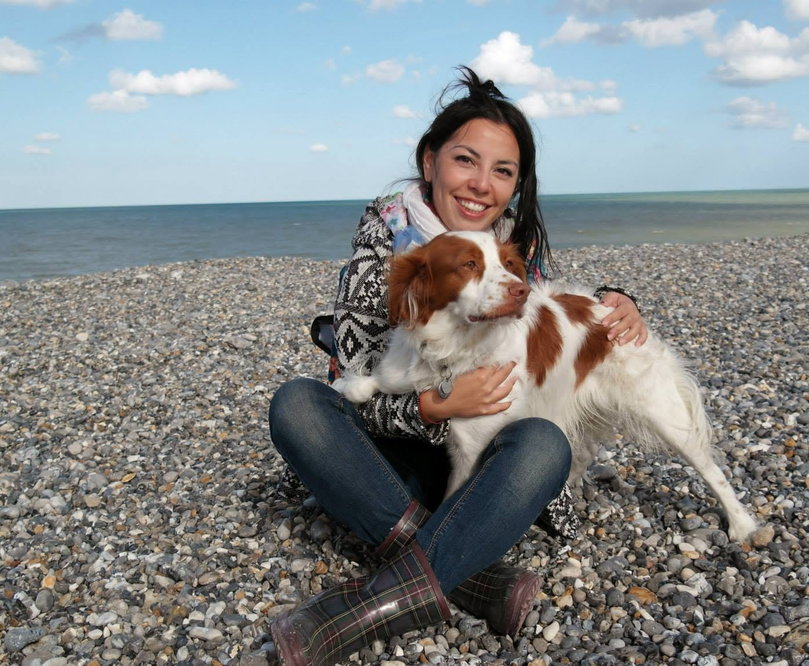
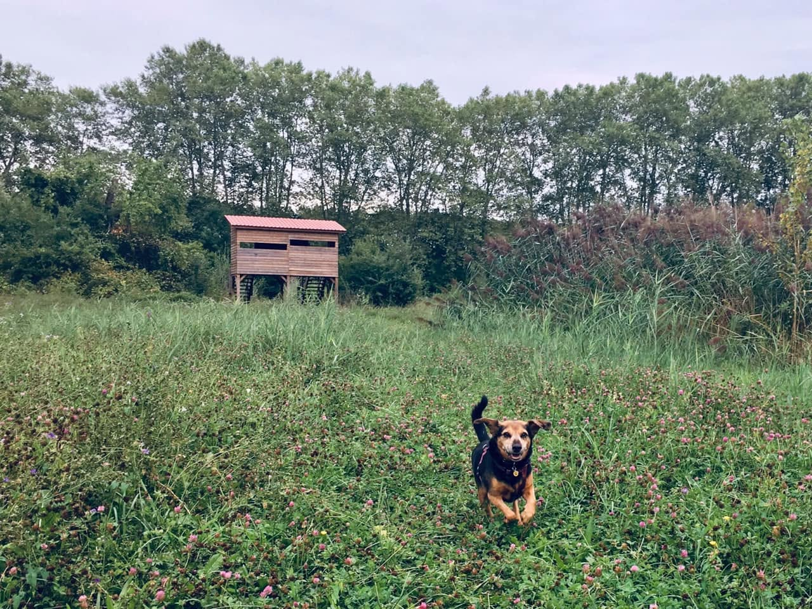
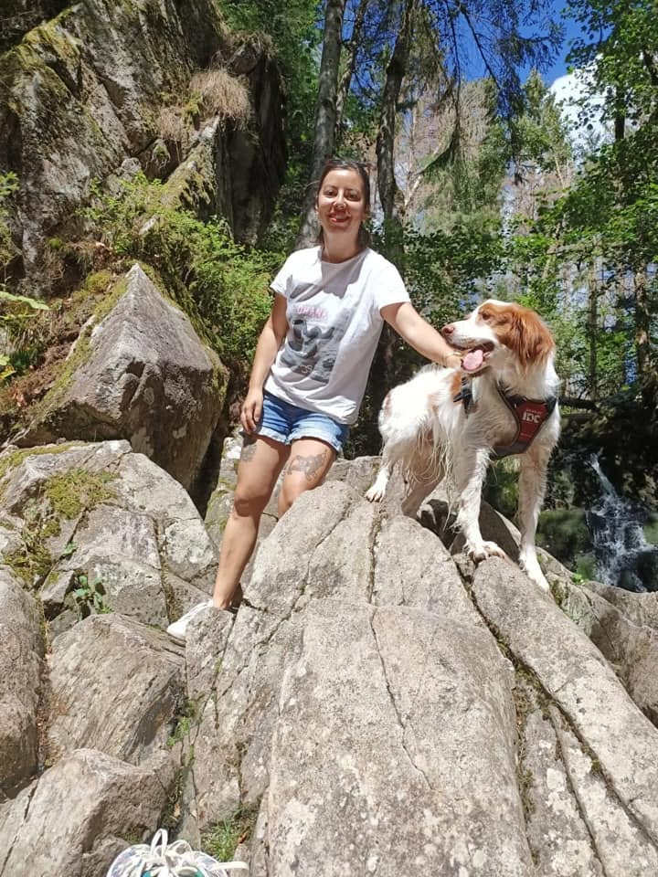
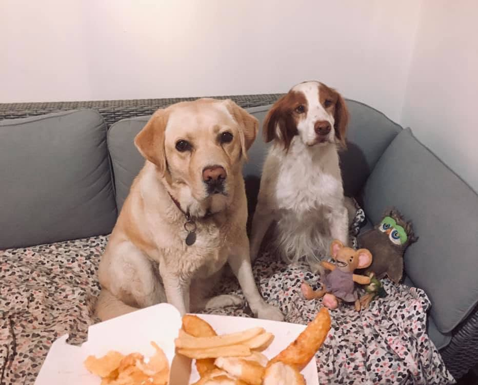
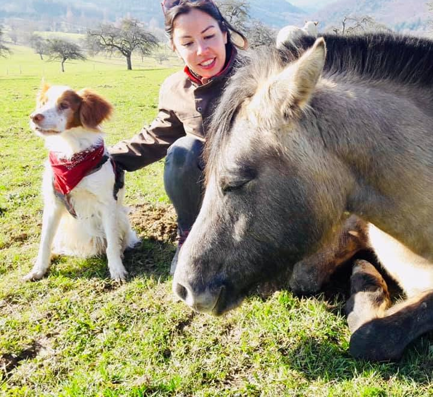
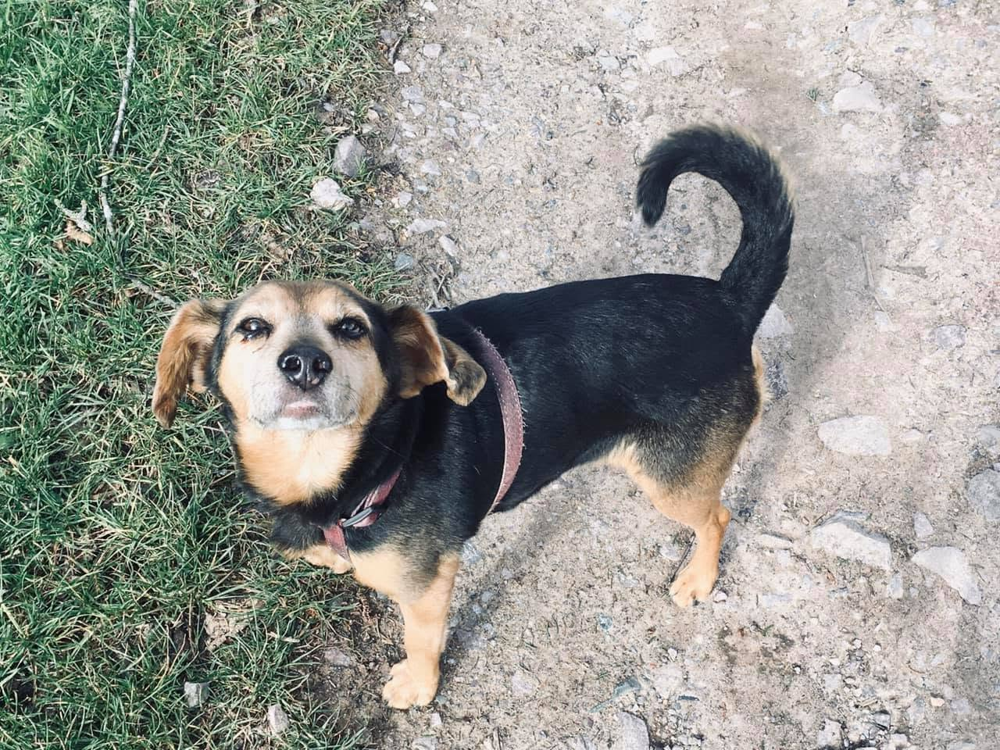
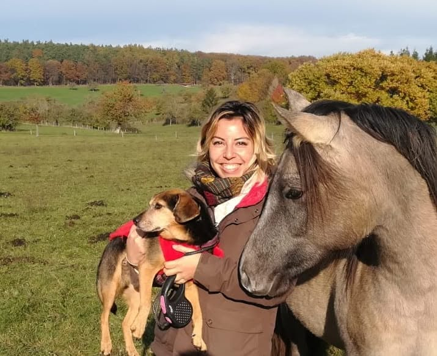
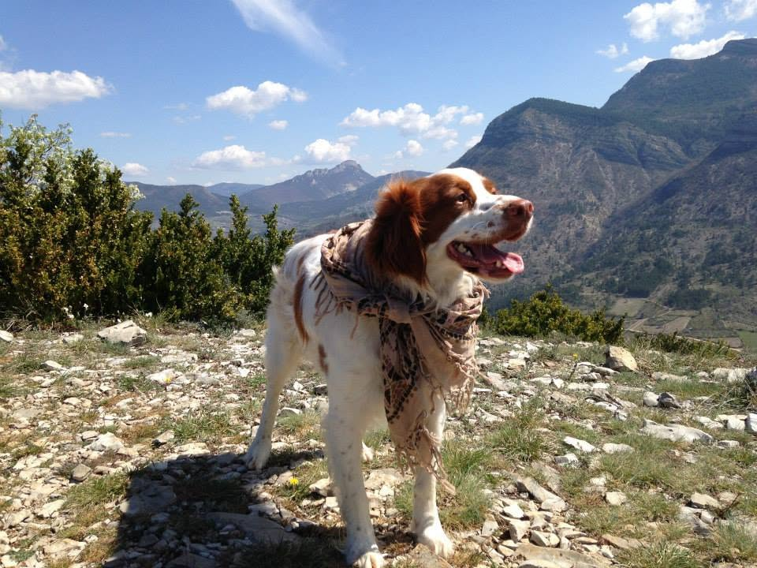
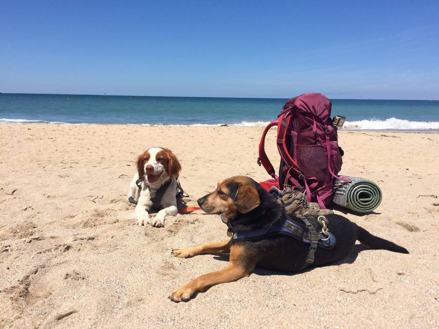
Pendant que vous travaillez, il retrouve sa bande de copains, part explorer la forêt, puis rentre à la maison apaisé, bien dépensé... et souvent impatient de recommencer.
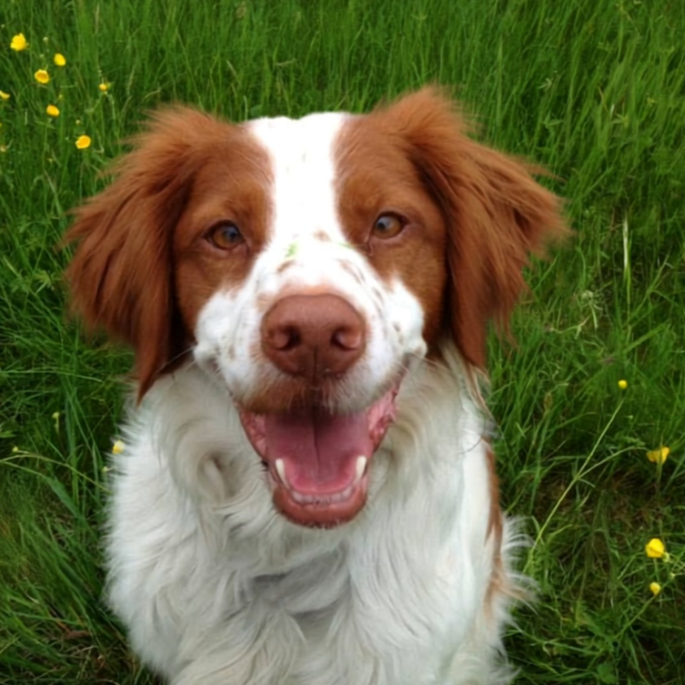
Missak, 2009 - 2026
Celui grâce à qui le Forêt Club existe.
Engagement : 1 balade minimum par semaine, pour préserver la stabilité des groupes.
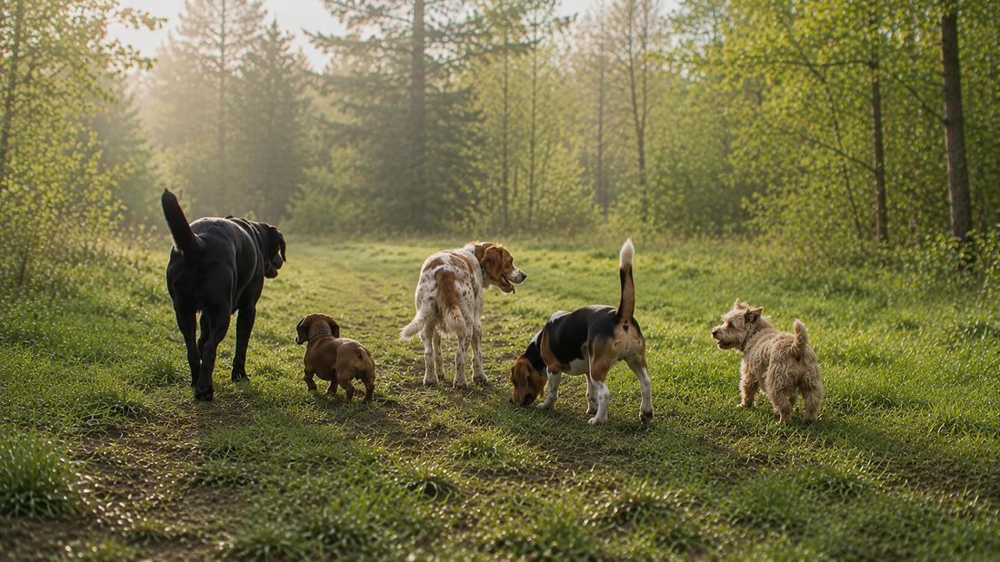
Pré-inscrivez votre chien dès maintenant pour lui réserver une place dans un groupe qui démarrera en septembre.
Je rejoins le ClubPré-inscription gratuite · Première rencontre incluse · Sans engagement
Oui. Les balades se font en petits groupes de chiens qui évoluent ensemble en liberté. Votre chien n'a pas besoin d'être le meilleur copain de tout le monde, mais il doit être à l'aise avec ses congénères et apprécier leur compagnie.
Chaque intégration se fait progressivement. Lors des premières balades, votre chien rencontre les autres un par un, afin de faire connaissance dans le calme. Je prends ensuite le temps d'observer les interactions sur plusieurs sorties avant de valider définitivement son intégration au groupe.
Oui, c'est l'objectif. Les lieux sont choisis pour permettre aux chiens d'évoluer en liberté en toute sécurité.
En revanche, chaque chien avance à son rythme. Lors des premières balades, ou si j'estime que les conditions ne sont pas encore réunies, il peut rester en longe le temps que la confiance s'installe.
On part quand même ! Les chiens adorent généralement les balades sous la pluie, et l'humidité fait ressortir les odeurs, ce qui rend l'exploration encore plus riche pour eux.
Avant de le ramener, je prends toujours le temps de le sécher autant que possible.
Pour le moment, je viens chercher les chiens à Strasbourg intra-muros.
Si vous habitez juste à côté (Schiltigheim, Bischheim, Illkirch, Ostwald, Lingolsheim...), n'hésitez pas à m'écrire quand même. Selon votre localisation, il est possible que nous trouvions une solution.
Avant toute intégration, nous organisons une visite de pré-balade. C'est l'occasion de faire connaissance, de rencontrer votre chien, de répondre à toutes vos questions et de vous expliquer en détail le déroulement des balades.
Oui. C'est même l'un des principes du Forêt Club. Les groupes sont stables afin que les chiens apprennent à se connaître, créent des repères et profitent de balades sereines avec leurs copains de forêt.